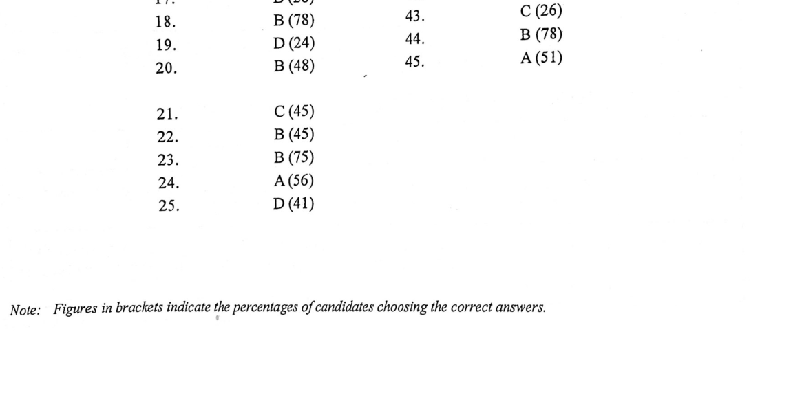

2018 DSE 數學 P1 Q18 答案＋詳解
題目（中文卷）
已知 $f(x)$ 的一部分隨 $x^2$ 正變，而另一部分則隨 $x$ 正變。假定 $f(2)=60$ 及 $f(3)=99$ 。 (a) 求 $f(x)$ 。 (b) 設 $Q$ 為 $y=f(x)$ 的圖像的頂點及 $R$ 為 $y=27-f(x)$ 的圖像的頂點。 (i) 利用配方法，求 $Q$ 的坐標。 (ii) 寫出 $R$ 的坐標。 (iii) 點 $S$ 的坐標為 $(56,0)$ 。設 $P$ 為 $\Delta QRS$ 的外心。描述 $P$ 、$Q$ 與 $R$ 之間的幾何關係。試解釋你的答案。 (5 分)
English version（英文卷題目）
- It is given that $\mathrm{f}(x)$ partly varies as $x^{2}$ and partly varies as $x$ . Suppose that $\mathrm{f}(2)=60$ and $\mathrm{f}(3)=99$ .
(a) Find $\mathrm{f}(x)$ . (3 marks)
(b) Let $Q$ be the vertex of the graph of $y=\mathrm{f}(x)$ and $R$ be the vertex of the graph of $y=27-\mathrm{f}(x)$ . (i) Using the method of completing the square, find the coordinates of $Q$ . (ii) Write down the coordinates of $R$ . (iii) The coordinates of the point $S$ are $(56,0)$ . Let $P$ be the circumcentre of $\Delta QRS$ . Describe the geometric relationship between $P$ , $Q$ and $R$ . Explain your answer. (5 marks)
官方評卷參考（Marking Scheme）

考評報告
甚佳。大約80%考生能求得f(x)。平平。很多考生未能利用配方法求得Q的坐標。平平。只有部分考生能寫出R的坐標。甚差。超過95%考生於描述P、Q與R之間的幾何關係時未能給出完整的解釋。